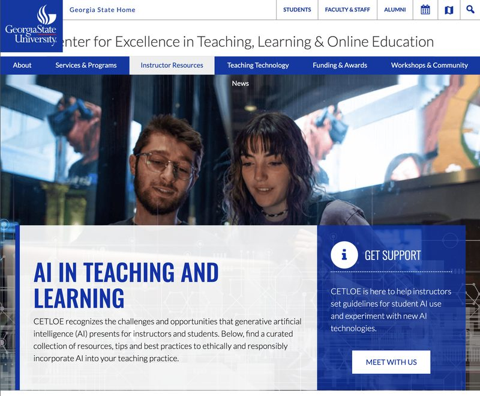
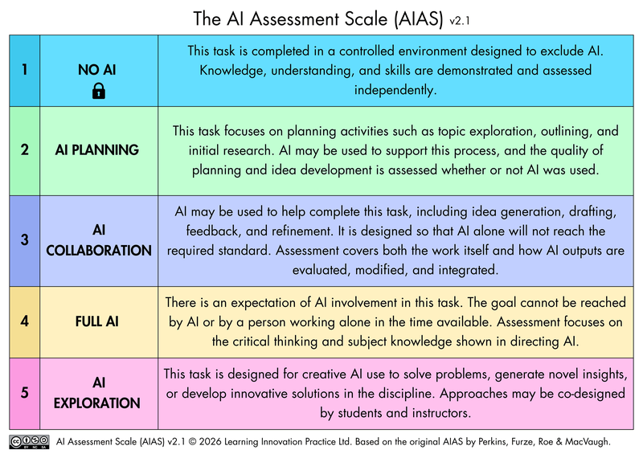
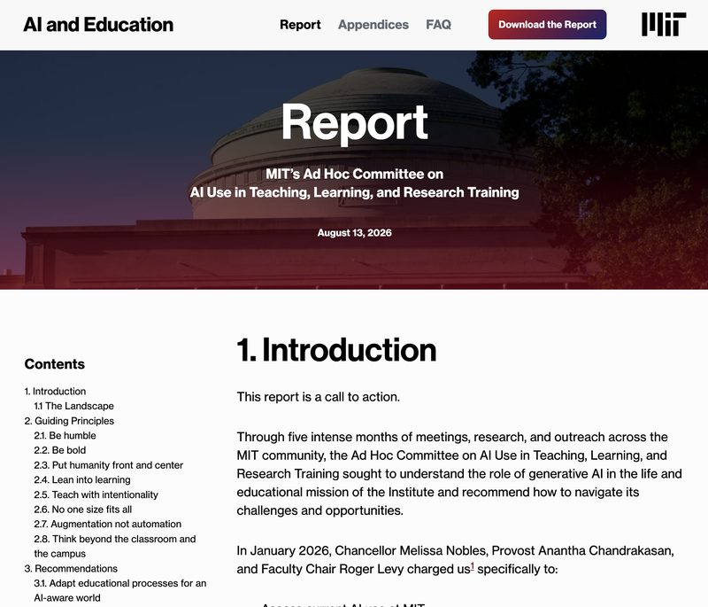

Welcome to the first issue from the AI in Education Committee. Each issue covers one focused topic: a policy update, a tool, a classroom experiment. We point you to the resources that matter most. Brief by design. We are here to help, not overwhelm.

GSU has two documents you should know about. The first is the university wide AI policy covering responsible use, data security, and academic integrity for all faculty, staff, and students. The second is the AI Policy Supplement released in August 2026, which provides more specific guidance for academic settings and makes clear that course level AI norms are the instructor's responsibility.
Together these documents form the institutional floor. What you build on top of it is up to you: how you handle AI in your assignments, your grading, your office hours. Which is exactly why reading them matters.
Whether you encourage AI use, discourage it, or take a nuanced middle ground, students deserve to know your position from day one. We encourage all faculty to include a clear statement about AI in their syllabi this semester.
GSU's CETLOE has put together ready to use syllabus statement templates that you can adopt or adapt for your course. They cover a range of stances, from "AI not permitted" to "AI encouraged with attribution" so you do not have to write something from scratch.
For each assignment, GSU encourages faculty to specify the permitted level of AI use. A simple and widely adopted framework for this is the AI Assessment Scale (AIAS) giving students a clear, numbered signal for every task, from no AI at all to full AI collaboration.

Learn more about the AI Assessment Scale (AIAS) →You already have access to one of the most capable AI tools available, at no cost. Simply log into gemini.google.com using your campus email (campusID@gsu.edu) and you will be signed into Gemini Advanced automatically through GSU's Google Workspace license.
This includes Gemini's most powerful model, NotebookLM for research and document analysis, and integration with Google Drive and Docs. A great place to start before exploring any other AI tool.
Both released major reports this fall. They are worth your attention not because we should copy them, but because they have done the hard thinking first and the lessons transfer directly to a CS department.
MIT's headline finding: AI can now credibly complete most undergraduate assignments, a signal that assessment design needs rethinking from the ground up. Their term for student over reliance on AI without critical thinking: "cognitive surrender."
